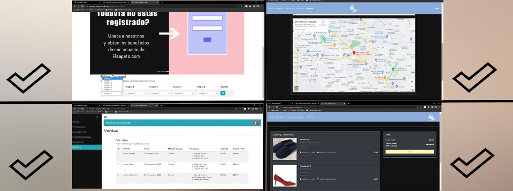

Description
As we mentioned before, this page has the normal view for customers that they visit it and apart from it it has a view for the administrator of the page this admin can edit everything from categories, subcategories, user accounts, products and the images shown.
IMPORTANTE
Instrucciones en español:
En la pagina puedes registrarte como usuario nuevo para poder entrar a verla solo ten en cuenta que cuando te registras debes iniciar sesion con el NOMBRE de usuario que pusiste y no con el correo! y para iniciar sesion como ADMINISTRADOR solo inicia sesion como usuario: "admin" y contraseña: "admin" para entrar a la pagina haz click aqui: ZAPATERIA